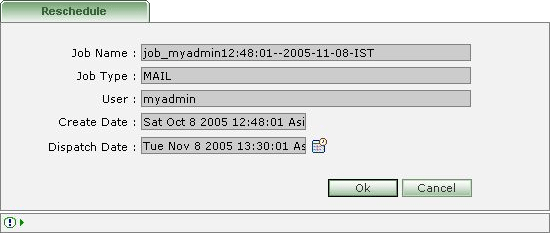

How to reschedule a Job?
In Scheduler List first select the Job to be re-scheduled.
Click on the 'Re-schedule a job' Icon [ ].

Re-schedule job page will be displayed.
Change the date/time for 'Dispatch Date:'
Press 'Ok' to reschedule the Job.
Press 'Cancel' to abort changes.